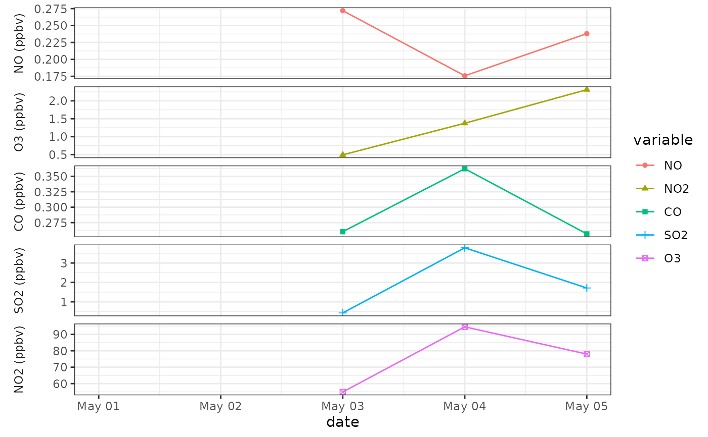

Calculates daily maximum-8-hour ozone from ozone observation data.
Usage
dm8n(
df,
colid = 1,
colio = 2,
starthour = 0,
endhour = 16,
nh = 6,
nc = 14,
na.rm = TRUE,
outputmode = 1,
unitlb = NA
)Arguments
- df
dataframe of time series for ozone and other related parameters.
- colid
column index for date-time. By default, it equals to 1.
- colio
column index for ozone. By default, it equals to 2.
- starthour
numeric, start hour for calculating 8-hour ozone. By default, it equals to 0.
- endhour
numeric, end hour for calculating 8-hour ozone. By default, it equals to 16 which means averaging ozone between 16~23.
- nh
numeric. The number of effective hourly concentrations per 8-hour period.
- nc
numeric. The number of effective 8-hour average concentrations per day.
- na.rm
logical. Should missing values (including NaN) be omitted from the calculations?
- outputmode
numeric, the format of the output, possible value: 1 or 2. See 'value' for the results of filling in 1 or 2.
- unitlb
labels for y axis of dma8 plot. By default, it equals to NA. If set this parameter, the order of species should same as that in the dataframe.
Value
a dataframe depends on the value of 'outputMode'. Value 1 will output 1 list which incudes 1 table (maximum-8-hour ozone) and 1 plot (dma8 plot). Value 2 will output 1 list which contains 4 tables (8-hour ozone, statistics of the number of effective hourly concentrations in each 8-hour average concentration, statistics of the number of effective 8-hour average concentrations in each day, maximum-8-hour ozone) and 1 plot (dma8 plot).
Details
This function can calculate daily maximum-8-hour ozone and other parameters corresponding to it.
Examples
dm8n(aqi,colio=6,unitlb=c("NO (ppbv)", "NO2 (ppbv)", "CO (ppbv)", "SO2 (ppbv)", "O3 (ppbv)"))
#> Joining, by = "temp_datetime"
#> [1] "2017-05-01"
#> [1] "2017-05-02"
#> [1] "2017-05-03"
#> [1] "2017-05-04"
#> [1] "2017-05-05"
#> Joining, by = "date"
#> Warning: OS reports request to set locale to "English" cannot be honored
#> Warning: Removed 10 rows containing missing values (geom_point).
#> Warning: Removed 10 row(s) containing missing values (geom_path).
